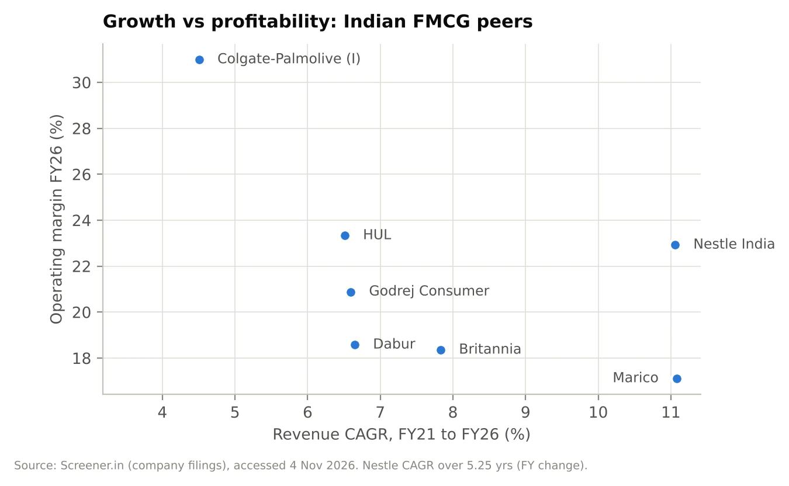

(opens the full-size chart)Business Analytics · Financial Analytics
Financial Analytics of Indian FMCG Companies
- Problem
- Management needs a consistent view of how peers perform, and a disciplined way to judge a capital project: a ₹600 crore plant.
- Data
- Twelve years (FY2015–FY2026) of profit and loss, balance sheet, cash flow and ratio data for seven listed FMCG companies, including HUL, Nestlé India and Britannia, reshaped into one 2,990-row long table.
- Approach
- A peer benchmark (growth, margins, ROE, ROCE, cash conversion cycle) built with SUMIFS over the long table, with DuPont analysis and one-off items normalized; a ten-year plant model with NPV, IRR and PMT; then a z-score scorecard, a Monte Carlo simulation (RAND with NORM.INV) and a CAPM cost of capital from published inputs.
- Result
- HUL’s reported FY26 profit growth of +41% becomes about −5% once a one-off ₹4,611 crore demerger gain is removed. The plant’s NPV is ₹217 crore (IRR 18.2%) at an 11% hurdle, which sits inside the 10.7–12.0% CAPM range; simulation lowers the expected NPV to ₹150 crore, with a 5.6% chance of a loss.
- Recommendation
- Report adjusted earnings beside reported earnings whenever one-offs exceed 5% of profit before tax, benchmark peers on ROCE and cash conversion rather than growth alone, and approve the plant with a contingency and a review if its EBITDA margin is below 15% in year two.